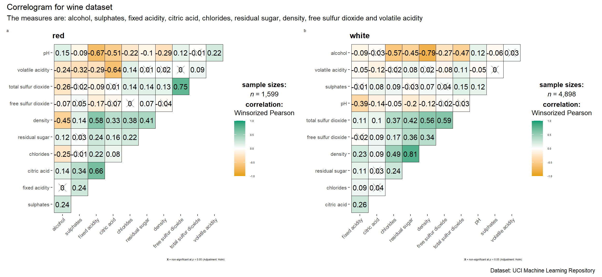
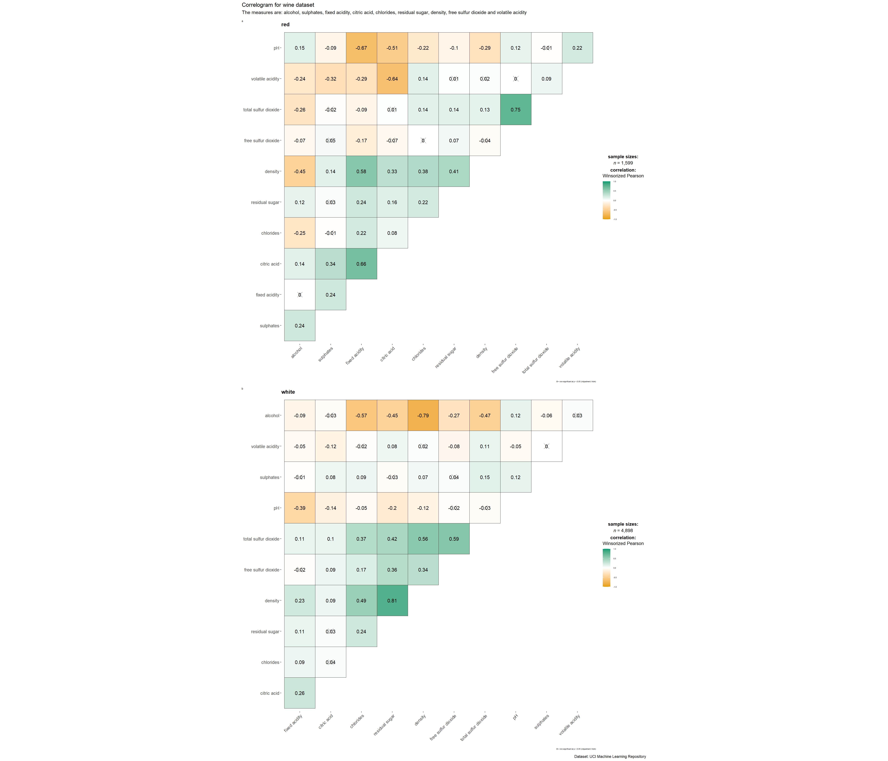
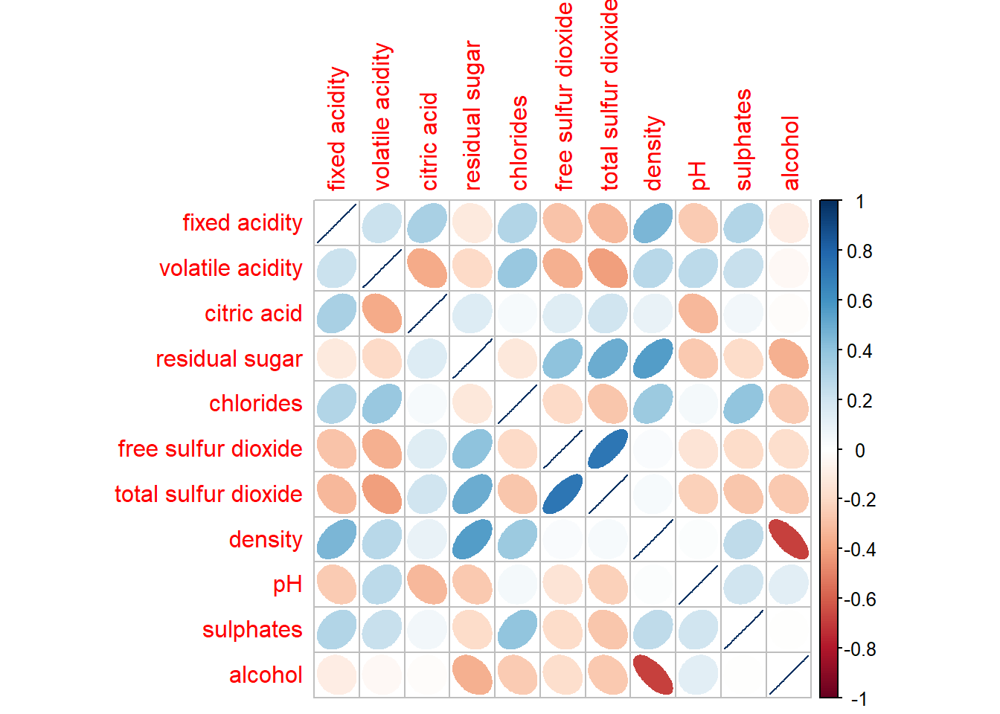
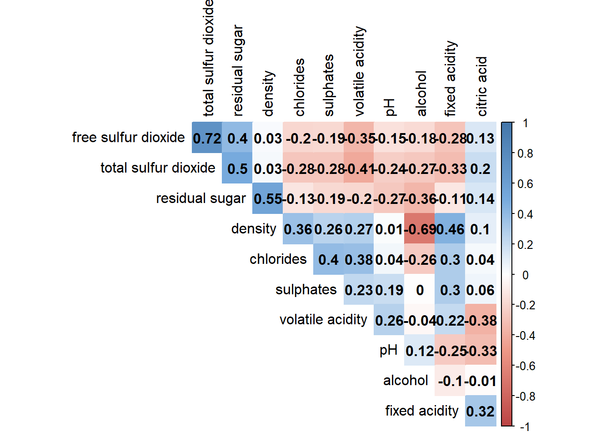
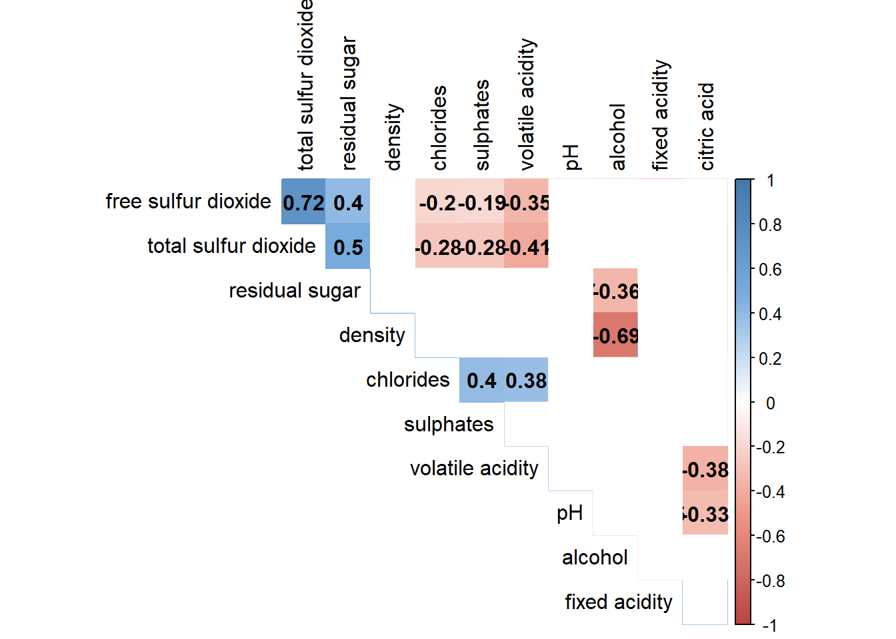

pacman::p_load(corrplot, ggstatsplot, tidyverse,
ellipse, RColorBrewer)Hands-on Exercise 5 - Part 2
Visual Correlation Analysis
1. Getting Started
1.1 Install and launch R packages
For the purpose of this exercise, the following R packages will be used, they are:
tidyverse, a family of R packages for data science process,
plotly for creating interactive funnel plot,
corrplot for varied plotting options in visualisation method, graphic layout, colour, legend etc.
ggpubr for customising ggplot2-based graphs
1.2 Import the data
This exercise uses winequality-red.csv from Wine Quality Data Set of UCI Machine Learning Repository.
Show code
wine <- read_csv("data/wine_quality.csv")1.3 Overview of the data
Show code
summary(wine) fixed acidity volatile acidity citric acid residual sugar
Min. : 3.800 Min. :0.0800 Min. :0.0000 Min. : 0.600
1st Qu.: 6.400 1st Qu.:0.2300 1st Qu.:0.2500 1st Qu.: 1.800
Median : 7.000 Median :0.2900 Median :0.3100 Median : 3.000
Mean : 7.215 Mean :0.3397 Mean :0.3186 Mean : 5.443
3rd Qu.: 7.700 3rd Qu.:0.4000 3rd Qu.:0.3900 3rd Qu.: 8.100
Max. :15.900 Max. :1.5800 Max. :1.6600 Max. :65.800
chlorides free sulfur dioxide total sulfur dioxide density
Min. :0.00900 Min. : 1.00 Min. : 6.0 Min. :0.9871
1st Qu.:0.03800 1st Qu.: 17.00 1st Qu.: 77.0 1st Qu.:0.9923
Median :0.04700 Median : 29.00 Median :118.0 Median :0.9949
Mean :0.05603 Mean : 30.53 Mean :115.7 Mean :0.9947
3rd Qu.:0.06500 3rd Qu.: 41.00 3rd Qu.:156.0 3rd Qu.:0.9970
Max. :0.61100 Max. :289.00 Max. :440.0 Max. :1.0390
pH sulphates alcohol quality
Min. :2.720 Min. :0.2200 Min. : 8.00 Min. :3.000
1st Qu.:3.110 1st Qu.:0.4300 1st Qu.: 9.50 1st Qu.:5.000
Median :3.210 Median :0.5100 Median :10.30 Median :6.000
Mean :3.219 Mean :0.5313 Mean :10.49 Mean :5.818
3rd Qu.:3.320 3rd Qu.:0.6000 3rd Qu.:11.30 3rd Qu.:6.000
Max. :4.010 Max. :2.0000 Max. :14.90 Max. :9.000
type
Length:6497
Class :character
Mode :character
2. Building Correlation Matrix: pairs() method
Create a scatterplot matrix by using the pairs function of R Graphics.
The variables are: fixed acidity, volatile acidity, citric acid, residual sugar, chlorides, free sulfur dioxide, total sulfur dioxide, density, pH, sulphates and alcohol.
pairs(wine[,1:11])
Columns 2 to 12 of wine dataframe is used to build the scatterplot matrix.
pairs(wine[,2:12])
Lower half of correlation matrix, upper.panel argument will be used as shown in code chunk below.
pairs(wine[,2:12], upper.panel = NULL)
Upper half of correlation matrix, lower.panel argument will be used as shown in code chunk below.
pairs(wine[,2:12], lower.panel = NULL)
To show the correlation coefficient of each pair of variables instead of a scatter plot, panel.cor function will be used. Higher correlation will be shown with larger font.
panel.cor <- function(x, y, digits=2, prefix="", cex.cor, ...) {
usr <- par("usr")
on.exit(par(usr))
par(usr = c(0, 1, 0, 1))
r <- abs(cor(x, y, use="complete.obs"))
txt <- format(c(r, 0.123456789), digits=digits)[1]
txt <- paste(prefix, txt, sep="")
if(missing(cex.cor)) cex.cor <- 0.8/strwidth(txt)
text(0.5, 0.5, txt, cex = cex.cor * (1 + r) / 2)
}
pairs(wine[,2:12],
upper.panel = panel.cor)
3. Visualising Correlation Matrix: ggcormat() method
Caution
Use ggcormat() to visualise correlation matrix.
3.1 Basic Plot
ggstatsplot::ggcorrmat(
data = wine,
cor.vars = 1:11,
ggcorrplot.args = list(outline.color = "black",
hc.order = TRUE,
tl.cex = 10),
title = "Correlogram for wine dataset",
subtitle = "Four pairs are no significant at p < 0.05"
)
Note
Learning Points
cor.varsargument is used to compute the correlation matrix needed to build the corrgram.ggcorrplot.argsargument provide additional (mostly aesthetic) arguments that will be passed toggcorrplot::ggcorrplotfunction. The list should avoid any of the following arguments since they are already internally being used:corr,method,p.mat,sig.level,ggtheme,colors,lab,pch,legend.title,digits.
3.2 Multiple Plots
Note
Faceting is not available in ggcorrmat() but in grouped_ggcorrmat() of ggstatsplot.
Show code
grouped_ggcorrmat(
data = wine,
cor.vars = 1:11,
grouping.var = type,
type = "robust",
p.adjust.method = "holm",
plotgrid.args = list(ncol = 2), # change the no. of columns required
ggcorrplot.args = list(outline.color = "black",
hc.order = TRUE,
tl.cex = 10),
annotation.args = list(
tag_levels = "a",
title = "Correlogram for wine dataset",
subtitle = "The measures are: alcohol, sulphates, fixed acidity, citric acid, chlorides, residual sugar, density, free sulfur dioxide and volatile acidity",
caption = "Dataset: UCI Machine Learning Repository"
),
ggplot.component = list(
theme(text=element_text(size=5),
axis.text.x = element_text(size = 8),
axis.text.y = element_text(size = 8)))
)
Show code
grouped_ggcorrmat(
data = wine,
cor.vars = 1:11,
grouping.var = type,
type = "robust",
p.adjust.method = "holm",
plotgrid.args = list(ncol = 1), # change the no. of columns required
ggcorrplot.args = list(outline.color = "black",
hc.order = TRUE,
tl.cex = 10),
annotation.args = list(
tag_levels = "a",
title = "Correlogram for wine dataset",
subtitle = "The measures are: alcohol, sulphates, fixed acidity, citric acid, chlorides, residual sugar, density, free sulfur dioxide and volatile acidity",
caption = "Dataset: UCI Machine Learning Repository"
),
ggplot.component = list(
theme(text=element_text(size=5),
axis.text.x = element_text(size = 10),
axis.text.y = element_text(size = 10)))
)
Note
Learning Points
Use argument
grouping.varto build a facet plot.Behind group_ggcorrmat(), patchwork package is used to create the multiplot.
plotgrid.argsargument provides a list of additional arguments passed to patchwork::wrap_plots, except for guides argument which is already separately specified earlier.annotation.argsargument calls plot annotation arguments of patchwork package.
4. Visualising Correlation Matrix: corrplot Package
In the code chunk below, cor() of R Stats is used to compute the correlation matrix of wine data frame.
wine.cor <- cor(wine[, 1:11])corrplot() is used to plot the corrgram by using all the default setting as shown in the code chunk below.
corrplot(wine.cor)
Note
Knowing the default settings
Visual object used to plot the corrgram is circle.
Layout of the corrgram is a symmetric matrix.
Colour scheme is diverging blue-red.
Blue colours are used to represent pair variables with positive correlation coefficients.
Red colours are used to represent pair variables with negative correlation coefficients.
Intensity of the colour (aka saturation) is used to represent the strength of the correlation coefficient.
Darker colours indicate relatively stronger linear relationship between the paired variables.
Lighter colours indicates relatively weaker linear relationship.
In corrplot package, there are seven visual geometrics (parameter method) can be used to encode the attribute values.
Seven visual geometrics: circle, square, ellipse, number, shade, color and pie.
corrplot(wine.cor,
method = "ellipse") 
4.1 Working with layout
corrplor() supports three layout types, namely: “full”, “upper” or “lower”.
corrplot(wine.cor,
method = "ellipse",
type="lower")
arguments diag and tl.col are used to turn off the diagonal cells and to change the axis text label colour to black colour respectively as shown in the code chunk and figure below.
corrplot(wine.cor,
method = "ellipse",
type="lower",
diag = FALSE,
tl.col = "black")
4.2 Working with mixed layout
Create a coorgram with mixed layout, the corrplot.mixed(), a wrapped function for mixed visualisation style will be used.
corrplot.mixed(wine.cor,
lower = "ellipse",
upper = "number",
tl.pos = "lt",
diag = "l",
tl.col = "black")
Learning Points
The lower and upper are used to define the visualisation method used.
In this case ellipse is used to map the lower half of the corrgram and numerical matrix (i.e. number) is used to map the upper half of the corrgram.
The argument tl.pos, on the other, is used to specify the placement of the axis label. The diag argument is used to specify the glyph on the principal diagonal of the corrgram.
4.3 Combining corrgram with the significant test
Example: Correlation between total sulfur dioxide and free surfur dioxide is statistically significant at significant level of 0.1 but not the pair between total sulfur dioxide and citric acid.
Use the p.mat argument of corrplot function as shown in the code chunk below.
wine.sig = cor.mtest(wine.cor,
conf.level= .95)
corrplot(wine.cor,
method = "number",
type = "lower",
diag = FALSE,
tl.col = "black",
tl.srt = 45,
p.mat = wine.sig$p,
sig.level = .05)4.4 Reordering a corrgram
Matrix reorder is very important for mining the hiden structure and pattern in a corrgram. By default, the order of attributes of a corrgram is sorted according to the correlation matrix (i.e. “original”). The default setting can be over-write by using the order argument of corrplot(). Currently, corrplot package support four sorting methods, they are:
“AOE” is for the angular order of the eigenvectors. See Michael Friendly (2002) for details.
“FPC” for the first principal component order.
“hclust” for hierarchical clustering order, and “hclust.method” for the agglomeration method to be used.
- “hclust.method” should be one of “ward”, “single”, “complete”, “average”, “mcquitty”, “median” or “centroid”.
“alphabet” for alphabetical order.
“AOE”, “FPC”, “hclust”, “alphabet”. More algorithms can be found in seriation package.
Show code
corrplot.mixed(wine.cor,
lower = "ellipse",
upper = "number",
tl.pos = "lt",
diag = "l",
order="AOE",
tl.col = "black")
4.5 Recordering a correlation matrix using hclust
If using hclust, corrplot() can draw rectangles around the corrgram based on the results of hierarchical clustering.
Show code
corrplot(wine.cor,
method = "ellipse",
tl.pos = "lt",
tl.col = "black",
order="hclust",
hclust.method = "ward.D",
addrect = 3)
4.6 Customising the correlogram (colour)
Adjust correlation matrix method from ellipse to colour.
Show code
col <- colorRampPalette(c("#BB4444", "#EE9988", "#FFFFFF", "#77AADD", "#4477AA"))
corrplot(wine.cor, method="color", col=col(200),
type="upper", order="hclust",
addCoef.col = "black", # Add coeff of correlation
tl.col="black", #Text label color
# hide correlation coeff on the main diagonal
diag=FALSE
)
Combine correlation with confidence level (95%)/ significance level (0.05)
Use insig = "blank" to exclude insignificant values.
Show code
wine.sig = cor.mtest(wine.cor,
conf.level= .95)
col <- colorRampPalette(c("#BB4444", "#EE9988", "#FFFFFF", "#77AADD", "#4477AA"))
corrplot(wine.cor, method="color", col=col(200),
type="upper", order="hclust",
addCoef.col = "black", # Add coeff of correlation
tl.col="black", #Text label color
# Combine with significance
p.mat = wine.sig$p, sig.level = 0.05, insig = "blank",
# hide correlation coeff on the main diagonal
diag=FALSE
)